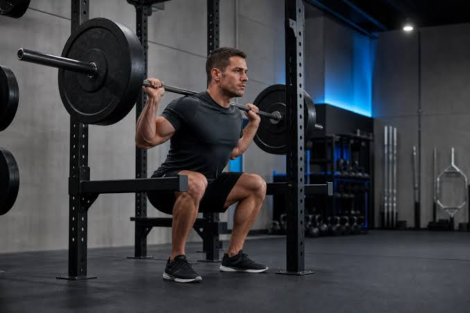
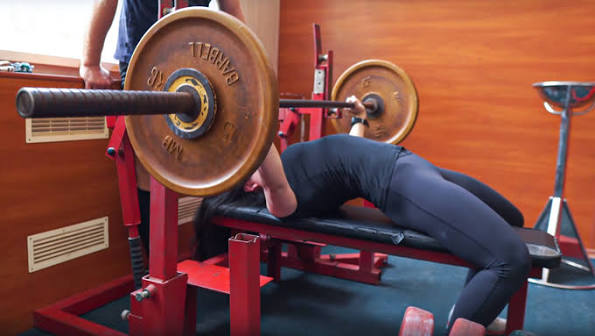
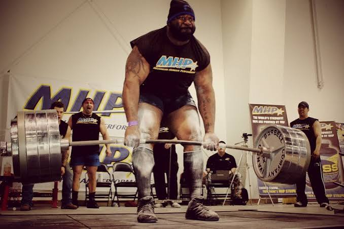

Що таке паверліфтинг?
Паверліфтинг (силове триборство) — це силовий вид спорту, в якому мета полягає у підйомі максимально можливої ваги у трьох базових вправах.
Базова трійка вправ

Присідання (Squat)
Опрацювання м'язів ніг та корсету.

Жим лежачи (Bench Press)
Головна вправа для верхньої частини тіла.

Станова тяга (Deadlift)
Перевірка загальної сили спини та ніг.
Поради для початківців
Завжди починайте з розігріву, дотримуйтеся техніки виконання та не поспішайте збільшувати вагу на грифi без належної підготовки!